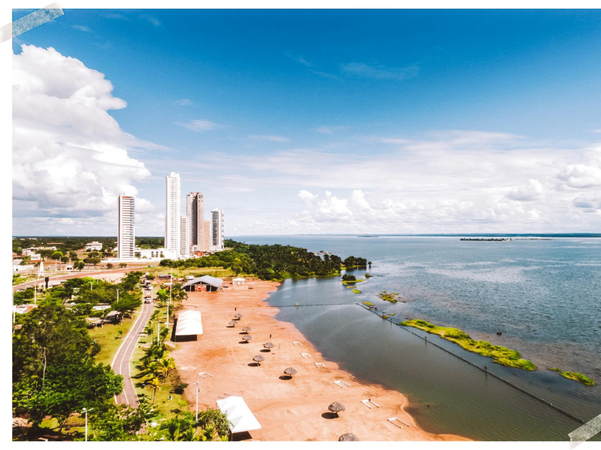

O Tocantins é o mais novo estado do Brasil, criado em 1988, e está localizado na região Norte do país. Conhecido por suas belas paisagens naturais, o estado reúne áreas de cerrado, rios, cachoeiras e importantes atrações turísticas, como o Parque Estadual do Jalapão. Sua capital, Palmas, foi planejada e construída para ser a sede administrativa do estado, destacando-se pelo crescimento urbano e pela qualidade de vida. A economia tocantinense baseia-se principalmente na agropecuária, na agricultura e no comércio, com destaque para a produção de grãos e criação de gado. Além disso, Tocantins possui rica diversidade cultural, marcada pelas tradições sertanejas, indígenas e religiosas presentes em todo o estado.

Voltar